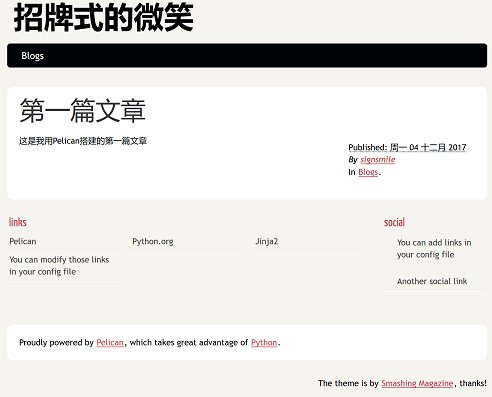

Pelican入门
周日 03 十二月 2017
在github搭建博客，刚开始用Jekyll，然后发现里面的Markdown排版很奇葩，网上说要换Markdown解析器，不想折腾（有时候懒是一种美德）。继而研究Hexo，环境还没装好呢，让我看到了Pelican......
我这不刚好有python环境吗？于是乎......
首先你要有python环境，然后就很简单了...
安装Pelican以及Markdown库
pip install pelican markdown
创建你的博客工程目录，当然如果是windows系统的话直接手工创建也行
mkdir -p ~/projects/yoursite
cd ~/projects/yoursite
关键语句pelican-quickstart，用来创建母版工程。这时候你需要回答一些问题，根据实际情况填上即可。
C:\Users\xxx\Blog_Pelican>pelican-quickstart
Welcome to pelican-quickstart v3.7.1.
This script will help you create a new Pelican-based website.
Please answer the following questions so this script can generate the files
needed by Pelican.
> Where do you want to create your new web site? [.]
> What will be the title of this web site? signsmile
> Who will be the author of this web site? signsmile
> What will be the default language of this web site? [English] Chinese
You must enter a 2 letters long string
> What will be the default language of this web site? [English] China Chinese
You must enter a 2 letters long string
> What will be the default language of this web site? [English] zh
> Do you want to specify a URL prefix? e.g., http://example.com (Y/n) Y
> What is your URL prefix? (see above example; no trailing slash) http://blog.signsmile.com
> Do you want to enable article pagination? (Y/n) y
> How many articles per page do you want? [10]
> What is your time zone? [Europe/Paris] Asia/Shanghai
> Do you want to generate a Fabfile/Makefile to automate generation and publishing? (Y/n) Y
> Do you want an auto-reload & simpleHTTP script to assist with theme and site development? (Y/n) Y
> Do you want to upload your website using FTP? (y/N) n
> Do you want to upload your website using SSH? (y/N) n
> Do you want to upload your website using Dropbox? (y/N) n
> Do you want to upload your website using S3? (y/N) n
> Do you want to upload your website using Rackspace Cloud Files? (y/N) n
> Do you want to upload your website using GitHub Pages? (y/N) Y
> Is this your personal page (username.github.io)? (y/N) N
Done. Your new project is available at
创建一个文章保存在~/projects/yoursite/content/helloworld.md
Title: 第一篇文章
Date: 2017-12-04 22:03
Category: Blogs
这是我用Pelican搭建的第一篇文章
有了文章之后就可以生成站点了，在工程目录输入以下命令
pelican content
此时就可以再output目录下看到生成的静态网站了，此时直接打开html不定能显示出你想要的效果，因为js以及css的链接不一定对，如果想要看到最终效果，可以用python自带的服务器来访问，地址是http://localhost:8000/
cd ~/projects/yoursite/output
python -m pelican.server
效果如下图

至此，基于Pelican的博客系统搭建成功了，以后只要在文章更新之后执行一遍pelican content命令即可。而生成的output目录即可用来上传到github空间来向外界展示你的博客了。